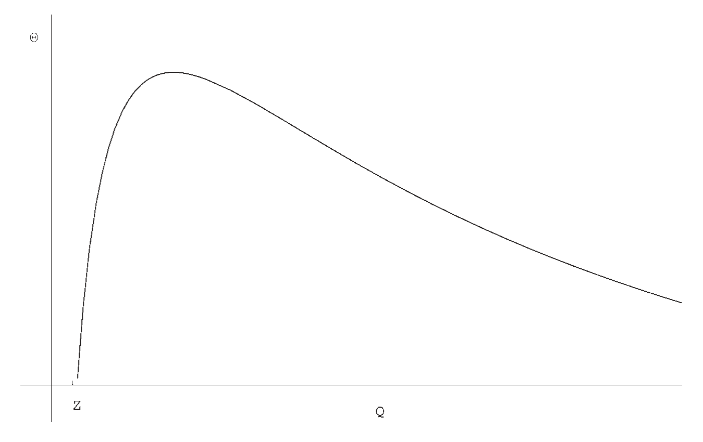
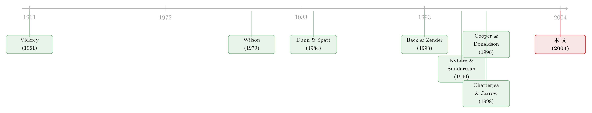

拍卖桌底下的那只手：当「逼空」悄悄改写了每个人心里的价
本文读的是 Nyborg & Strebulaev (2004, Review of Financial Studies)：在国债、回购这类「一次卖很多份」的多单位拍卖里，竞标者拍卖前往往已经背着空头或多头。一旦二级市场上可能出现短逼空 (short squeeze)，原本看似「共同价值」的拍卖就被悄悄改写成一个内生私人价值的博弈——空头估值向下倾斜、大多头向上倾斜、小多头则是平的。由此推出一个干净的权衡：歧视性拍卖逼空更多、卖方收入更高，统一价拍卖逼空概率更低；而当拍卖规模趋于无穷，两者殊途同归。
1 一桩 1991 年的旧案
先讲个故事。1991 年 8 月，所罗门兄弟（Salomon Brothers）在一场两年期美国国债拍卖里买走了绝大部分券。然后呢？《华尔街日报》是这么写的：
……这批两年期票据变得如此稀缺，以至于持券的交易商在把券借给空头时，索要了高得离谱的费用和融资成本。从芝加哥的小型债券套利铺子，到纽约的大行，全美国的债券交易员都被狠狠烧伤。「套利的人伤得最重；好几家小铺子直接关门了。」
这就是债券交易员口中的「输家的噩梦 (loser's nightmare)」：你在拍卖前已经卖空了某只券，等你回头去市场上买券平仓时，发现券都攥在一个人手里，而他可以开出任何价格。事后，所罗门被禁止代客投标，被罚了近 $300 million。从此，1998 年 10 月起，所有美国国债拍卖都改成了统一价 (uniform price) 形式。
可这件事真正有意思的地方，不在丑闻本身，而在它揭开的一个被主流拍卖理论长期忽略的事实：拍卖从来不是孤立的。它前面挂着一个远期（when-issued）市场，竞标者带着头寸进场；它后面接着一个二级市场，输了的人还得去买券平仓。一旦这条「拍卖—二级市场」的链条被接通，一个看似纯技术的问题——你该报什么价——就再也不能只看你对这只券「值多少钱」的判断了。
给个量级感受一下这件事有多大：1998–2002 这五年里，美国财政部办了 800 多场拍卖，名义总额 $12.7 trillion；而一级交易商（必须参与投标）常常带着可观的空头进场。再看欧洲：欧央行（ECB）每周一次的回购拍卖，规模大约 90 billion 欧元，自 2000 年 7 月起一直用歧视性 (discriminatory) 形式。这两个全世界最重要的资金市场，恰恰都活在「逼空威胁」的阴影里。
全文我们只反复咬住一个核心：短逼空这件「未来才可能发生」的事，如何反过来在拍卖的此刻，重新定义了每个人心里的「价」。把这一条想透，论文的所有结论就都顺下来了。
2 一个被「逼空」改写的估值
先把最违反直觉的那一步亮出来。
标准拍卖理论喜欢把世界一分为二：要么是私人价值 (private value)——每个人心里有个独立的、外生给定的估值，像 Vickrey (1961) 那样；要么是共同价值 (common value)——东西对所有人值一个数，只是大家信息不同。本文的设定，乍看是后者：如果没有逼空，二级市场会以竞争性利率 R_0 出清，那么这只券对谁都值同一个数。
接着，一个自然的问题是：那为什么不同的人会报出系统性不同的价？
答案就藏在逼空里。设想你是空头：拍卖结束后，你必须去二级市场买券平仓。如果有人垄断了券，你得按惩罚性的高利率 R_h（在货币市场里就是央行的边际贷款便利）去借。于是，在拍卖里多拿到一单位券，对你的价值就特别高——因为它让你少被宰一单位。但你拿的越多，这种「保命」的边际价值就越低。结论是：空头的估值曲线向下倾斜。
再设想你是个大多头：你手里券多，多到别人凑不齐、非得来求你。你越能制造稀缺，越能把 R_h 收得理直气壮。所以你在拍卖里再多拿一点券，反而让你的市场势力更大、能榨出更多——大多头的估值曲线向上倾斜。而一个小多头，无论拿不拿券都左右不了大局，他的估值是平的。
这就是论文的第一个、也是最根本的发现：同样一只券，在共同价值的外衣下，空头、大多头、小多头却有三种截然不同的边际估值。用作者自己的话说，这里的私人价值是内生的 (endogenous)，而且彼此不独立——它取决于你的禀赋（你是空是多、是大是小）和市场结构。这一下就把「拍卖到底是私人价值还是共同价值」这个常被当作外生给定的分类，变成了一个需要内生推导的问题。
3 模型：三个日期，一道挤压
要把上面的直觉钉死，得有一个干净的结构。论文搭了一个三期模型：date 1 拍卖，date 2 二级市场交易（可能发生逼空），date 3 结算收钱。
设定。 有 N 个玩家，期初持仓 \(Y_0=\{y_{n,0}\}_{n=1}^N \in \mathbb{Z}^N\)。持仓可正可负，负的叫空头、正的叫多头，但总供给 \(Q_0=\sum_n y_{n,0}\ge 0\)。把标的物想成「钱」：空头必须为期初的负头寸再融资，办法只有两个——在 date 1 的拍卖里借，或在 date 2 的二级市场里借。
记第 n 个玩家在拍卖中标 \(y_{n,1}\)、加权平均利率 \(a_{n,1}\)；他在 date 2 的持仓是 \(y_{n,2}=y_{n,0}+y_{n,1}\)。若 \(y_{n,2}<0\)，他还得在 date 2 借钱平仓——这就是逼空的入口。date 3 他的总利息损益是论文的方程 (1)：
玩家的目标就是最大化 \(\pi_n\)。注意：除了 \(y_{n,0}\) 是外生给定的，其余变量全是内生的。
拍卖规则。 拍卖规模 \(Q\in\mathbb{Z}_+\)。一个出价是利率—数量对 \((r,q)\)；出价按利率从高到低成交，直到供给耗尽，临界利率叫止损利率 (stop-out rate) \(r_s\)。两种形式的差别只在「中标者付多少」：
$$\text{uniform:}\quad a_{n,1}y_{n,1}=r_s\,y_{n,1}, \qquad\qquad \text{discriminatory:}\quad a_{n,1}y_{n,1}=\sum_{i} q_{n,i}r_{n,i}\mathbf{1}_{[r_{n,i}>r_s]}+[\,\cdots\,]r_s$$
统一价里人人付同一个止损利率 \(r_s\)；歧视性里你报多少付多少，所以 \(a_{n,1}\) 可以高于 \(r_s\)。
逼空从哪来？ 关键是「市场势力」的定义（方程 7）：
$$z_{n,t}\;\equiv\;\max\!\left\{0,\; -\!\!\sum_{i\in N\setminus\{n\}} y_{i,t}\right\},\qquad t\in\{0,2\}$$
直觉很漂亮：把除了 n 以外所有人的持仓加起来，如果是负的（也就是市场上其他人加总仍然缺券），那么这个缺口就得由 n 来填——他就对这 \(z_{n,t}\) 单位的券有了垄断力。空头和小多头的 \(z\) 恒为零。若没人有市场势力，所有券都按竞争利率 R_0 成交；只要有人握着 \(z\) 单位的「别人凑不出来」的券，他就能按 \(R_h>R_0\) 把这些券借给走投无路的空头。
「搭便车」的一个旋钮。 这里论文做了个聪明的统一。短逼空文献长期有个争论：当一个大多头逼空时，那些小多头能不能趁机把自己手里的券也按高价 R_h 卖出去、搭便车 (free riding)？Dunn & Spatt (1984) 说不能，Cooper & Donaldson (1998)（沿用 Kyle 1984 的想法）说能。差别全在二级市场的交易机制怎么设计。本文不站队，而是引入一个参数 \(\delta\in[0,1]\) 把两者作为特例都收进来：\(\delta=0\) 是 Dunn–Spatt（无搭便车），\(\delta=1\) 是 Cooper–Donaldson（完全搭便车）。一个小多头（\(n\in L_0\)，无市场势力）的 date-2 损益是方程 (8) 的第一行：
$$\pi_n=\big[R_0+\delta\,\mathbf{1}_{[X\ge 1]}(R_h-R_0)\big]\,y_{n,2}\;-\;a_{n,1}y_{n,1},\qquad n\in L_0$$
读一下就懂了：哪怕你自己没有市场势力，只要场上存在一个逼空者（\(X\ge1\)）且搭便车通道是开的（\(\delta=1\)），你手里的券照样能赚到 R_h 的高利率。\(\delta\) 越大，小多头越能不劳而获。
有了这套机器，整篇文章的张力就被压进了一个问题里：面对身后这道可能的挤压，谁该在拍卖里激进出手，谁该按兵不动？
4 谁该激进，谁该装死
现在反转出现了。
你大概会以为：既然多头才是逼空的受益者，那拍卖里该抢券的是多头。恰恰相反。 论文证明，在均衡里——无论统一价还是歧视性——空头才是那个出价最凶的人。因为空头对头几单位券的估值高得吓人（每一单位都意味着少被宰一刀），他们会为这些单位报出更高的期望均价、更大的离散度。
而更反直觉的，是多头的反应。空头把前几单位的价抢得太高，以至于大多数多头干脆选择不参与拍卖。论文称之为「非参与 (non-participation)」结果。最让人意外的是：当搭便车空间很大（\(\delta\) 大）时，这个不参与反而更稳。 按常理，一个小多头在拍卖里随手买一点券，并不会损害他将来在二级市场上搭便车的能力，他为什么不顺手买一点？答案是：空头把这点券的价抬得太高了，买进来根本不划算——还不如在拍卖里彻底装死，把舞台让给空头去抢，自己专心等着在二级市场上搭便车。
这就是全文的支点：逼空威胁不是让所有人都更激进，而是把竞争者按「头寸方向」分了层——空头玩命抢，多头集体退场。
均衡的存在性也随形式而变：统一价拍卖里存在纯策略均衡，而歧视性拍卖里只有混合策略均衡。直觉上，歧视性里「报多少付多少」让出价者必须在「压价省钱」和「保中标」之间反复试探，没有一个干净的纯策略落点，于是只能随机化。
5 歧视性 vs 统一价：一个干净的权衡
把上面的均衡推到底，就得到论文的主结果，一个卖方真正关心的权衡：
- 歧视性拍卖的期望收入更高；
- 但统一价拍卖里逼空发生的均衡概率更低。
换句话说，歧视性拍卖在「拍卖本身」和「二级市场」两处都制造了更多偏离竞争利率的交易。于是它预测：歧视性拍卖之后的二级市场波动率更高。这一点不是纸上谈兵——它和 Nyborg & Sundaresan (1996) 对 1990 年代美国财政部「统一 vs 歧视」实验的实证发现是一致的。
再往细里走，歧视性拍卖里逼空概率的比较静态非常干净：随拍卖规模下降、随最大多头的市场势力上升、随搭便车空间（\(\delta\)）下降。 规模越大、势力越小，价格扭曲、二级波动、单位收入就越温和。如下图 2 所示，逼空概率是拍卖规模的一条下降曲线。

Figure 2: depicts the probability of a short squeeze as a function of
而最优雅的收尾是一个渐近等价 (asymptotic equivalence)：当拍卖规模 \(Q\to\infty\)，两种形式的结果收敛到同一个点。直觉上，规模一大，单个玩家能制造的相对稀缺就被稀释了，逼空这件事本身退场，于是「你报多少付多少」和「人人付出清价」的差别也随之消失。这和拍卖文献里那个更广为人知的渐近收敛传统遥相呼应（关于统一价拍卖里市场势力与「打折之谜」的另一面，可参见《把价格切成小格子，垄断就消失了——重读统一价格拍卖里的「打折之谜」》）。
别误读这个权衡的边界。论文反复强调：所有这些结论只来自逼空威胁这一条。它没有去比较两种形式在「赢家诅咒」或「买方垄断势力」上的优劣——那是 Milgrom & Weber (1982)、Wilson (1979)、Back & Zender (1993) 处理的另一条线。本文是把逼空这个被遗漏的维度单独拎出来，看清楚它一个人能讲出多少故事。
6 文献脉络
把这篇论文放回它的位置，脉络其实很清晰。
最上游是拍卖理论的两块基石：Vickrey (1961) 给出外生、独立的私人价值模型；Wilson (1979) 把份额拍卖（share auctions）和「打折」问题摆上台面，Back & Zender (1993) 则在可分商品拍卖里把统一价的均衡多重性与压价推到极致（这条「可分拍卖里的合谋」暗线，另见《拍卖桌上的「合谋」，到底藏在哪一种规则里？》）。但这一整条线，都把「私人价值还是共同价值」当作外生给定，也都不碰二级市场。
另一条线是短逼空/逼仓文献：Kyle (1984) 提出小多头能在大多头逼空前抢先高价出货——搭便车；Dunn & Spatt (1984) 用一个�sinking-fund债券模型给出没有搭便车的版本；Cooper & Donaldson (1998) 则给出完全搭便车的版本。两者的分歧，本质是二级市场微观结构的差别。而这种「小玩家搭大玩家便车」的思想，其实在公司金融里也有个著名的孪生兄弟——Shleifer & Vishny (1986) 笔下，小股东搭大股东监督的便车。

到了实证与中段，Nyborg & Sundaresan (1996) 记录了美国财政部统一 vs 歧视实验里的二级市场波动差异；离本文最近的是 Chatterjea & Jarrow (1998)，他们建了一个「远期市场 + 单一出价拍卖 + 可能逼空的二级市场」模型。本文正是站在这两条线的交汇处：它第一次把「真正的多单位拍卖（每人可对多单位提多个价）」与「二级市场逼空威胁」缝在一起，让任意数量的策略玩家、无论空多、都能进场竞争，并用一个 \(\delta\) 把 Dunn–Spatt 与 Cooper–Donaldson 收成两个特例。
7 评论与延伸（Q&A + 研究方向）
(a) 几个可能的疑问
Q：这里的「私人价值」和 Vickrey 那种私人价值，到底差在哪？
差在「从哪来」和「独不独立」。Vickrey (1961) 的私人价值是外生派给每个人、且彼此独立的。本文的私人价值是内生的：它由你的禀赋（空/多、大/小）和市场结构共同决定，且彼此不独立——你估值高不高，取决于别人手里有没有券。同一只券因此有三种斜率的估值曲线，这正是被逼空威胁「制造」出来的。
Q：为什么逼空威胁下，反而是空头（受害者）出价最凶，而多头（受益者）装死？
因为估值斜率反了直觉。空头对头几单位券估值极高（每一单位都让他少被宰一刀），于是把这些单位的价抢得很高；而被抢高之后，多头在拍卖里买券既贵又削弱不了自己将来的搭便车收益，于是最优选择是退场，专心等二级市场。结果是空头激进、多头集体不参与。
Q：歧视性拍卖收入更高，是不是就该推荐财政部用歧视性？
不能这么跳。收入更高的代价是逼空概率更高、价格扭曲更大、二级市场波动更高。对一个把「低中标集中度、低波动」写进目标的主权财政部（美国财政部就明令单一交易商最多买
35%）来说，这恰恰是它想避免的。论文给的是一个权衡，不是一个推荐。
Q：\(\delta\)（搭便车空间）这个旋钮，会不会改变核心结论？
令人意外地，不会动摇定性结论。\(\delta\) 影响的是歧视性拍卖里的收入，以及逼空概率的水平；但「空头激进、多头不参与、歧视性逼空更多收入更高、渐近等价」这套定性结构，对搭便车空间并不敏感。这正是把 Dunn–Spatt 与 Cooper–Donaldson 统一进同一框架后才看得清的稳健性。
Q：渐近等价是不是意味着「拍卖形式之争」在大市场里没意义？
在「逼空」这个维度上，是的——规模足够大时稀缺被稀释，逼空退场，两种形式收敛。但现实里的拍卖规模有限，且赢家诅咒、买方势力等别的维度依然能区分两种形式。所以结论应读作：逼空这一条理由，只在中小规模拍卖里才真正把两种形式拉开。
Q：模型把惩罚利率 \(R_h\) 当外生给定，这合理吗？
这是沿用文献的标准做法（Kyle 1984、Dunn & Spatt 1984、Cooper & Donaldson 1998 都如此）。在货币市场里 \(R_h\) 就是央行的边际贷款便利；在国债里是交割违约的罚则。论文还在脚注里论证：即便把逼空利率改成大多头与空头讨价还价的结果，在标准 Nash/Rubinstein 议价下它也不依赖双方头寸，因而对本文分析仍可视作外生。
(b) 几个可能的研究问题与提案
1. 把逼空威胁搬进公司债的一级—二级链条。 【经济故事】公司债新券上市后常有「上市即赚 47bp」之类的承销折价与稀缺，而做空与平仓同样依赖券能不能借到。本文的「空头激进、多头装死」机制，是否也写在公司债的配售与首日成交里？ 【可行性】中。需要把承销配售数据与 TRACE 成交、以及证券借贷（券源紧张度）对齐；识别可借「同一发行人不同券」的相对稀缺做横截面比较。难点是承销配售往往非公开。
2. 外资持有人作为「大多头」的市场势力。 【经济故事】在不少新兴市场国债拍卖里，少数大型外资机构持券集中，天然具备本文意义上的 \(z_{n,t}\)。他们的进退是否系统性放大了二级市场的逼空与波动？ 【可行性】中高。许多国家有逐笔国债持有人登记（按投资者类型），可构造持仓集中度作为「市场势力」代理，配合拍卖后回购利率（special rate）做事件研究。识别上可利用指数纳入等外生的外资需求冲击。
3. 用「special 利率」直接量出逼空概率，检验比较静态。 【经济故事】本文给出三条干净的比较静态：逼空概率随拍卖规模下降、随最大多头势力上升、随搭便车空间下降。回购市场上券的 special 程度，正是逼空的可观测温度计。 【可行性】高。美国与欧洲都有回购 special 利率数据与拍卖规模、中标集中度。把 special 偏离一般抵押利率的幅度回归到规模与集中度上，是一个相对 doable 的检验；难点是 \(\delta\) 没有现成代理，需要用市场结构（如做市商数量）间接刻画。
4. 统一价改革的自然实验再审视。 【经济故事】美国财政部 1998 年 10 月全面转向统一价。本文预测：转向后逼空概率与二级波动应当下降。 【可行性】高。改革前后样本充足，可做断点/DiD。挑战在于同期市场微观结构与一级交易商生态也在变，需要小心剥离其他制度变化的混杂。
我的判断。 这篇文章最漂亮的贡献，是把一个被拍卖理论当作「外生标签」的东西——私人价值还是共同价值——内生化了，而且内生的来源具体到了「你是空是多、是大是小」这个可观测的禀赋上。这比单纯多写一个逼空模型要深一层：它告诉我们，估值的斜率不是性格，而是头寸与市场结构的函数。\(\delta\) 把两支对立的旧文献收成特例，也是教科书级的整合手法。
对识别（这里是理论的「识别」即均衡选择）的担忧有两处：其一，惩罚利率 \(R_h\) 与逼空利率的外生性虽有议价论证撑腰，但现实里逼空的价往往内生于被逼者的绝望程度，把它钉成常数可能恰好抹掉了最有意思的反馈；其二，歧视性拍卖只有混合策略均衡，意味着可观测的出价会有相当的随机性，这让「歧视性逼空更多」之类的预测在实证里需要靠分布、而非均值来检验，门槛不低。
后续我最想看到的，是把这套「空头激进、多头装死」的预测，拿回购 special 利率与一级交易商的逐笔投标去对——尤其在外资集中持有的新兴市场国债上。如果空头的激进与多头的非参与能在真实标书里被看见，那这篇 2004 年的纯理论文章，就不只是一个优雅的故事了。
参考文献
- Back, K., and J. F. Zender (1993). Auctions of Divisible Goods: On the Rationale for the Treasury Experiment. Review of Financial Studies 6, 733–776.
- Chatterjea, A., and R. A. Jarrow (1998). Market Manipulation, Price Bubbles, and a Model of the U.S. Treasury Securities Auction. Journal of Financial and Quantitative Analysis 33, 255–289.
- Cooper, D. J., and R. G. Donaldson (1998). A Strategic Analysis of Corners and Squeezes. Journal of Financial and Quantitative Analysis 33, 117–137.
- Dunn, K. B., and C. S. Spatt (1984). A Strategic Analysis of Sinking Fund Bonds. Journal of Financial Economics 13, 399–423.
- Kremer, I., and K. G. Nyborg (2004). Underpricing and Market Power in Uniform Price Auctions. Review of Financial Studies (forthcoming).
- Kyle, A. (1984). A Theory of Futures Market Manipulations. In R. Anderson (ed.), The Industrial Organization of Futures Markets, Lexington Books.
- Milgrom, P. R., and R. J. Weber (1982). A Theory of Auctions and Competitive Bidding. Econometrica 50, 1089–1122.
- Nyborg, K. G., and S. Sundaresan (1996). Discriminatory versus Uniform Treasury Auctions: Evidence from When-Issued Transactions. Journal of Financial Economics 42, 63–104.
- Shleifer, A., and R. W. Vishny (1986). Large Shareholders and Corporate Control. Journal of Political Economy 94, 461–488.
- Vickrey, W. (1961). Counterspeculation, Auctions, and Competitive Sealed Tenders. Journal of Finance 16, 8–37.
- Wilson, R. (1979). Auctions of Shares. Quarterly Journal of Economics 93, 675–689.